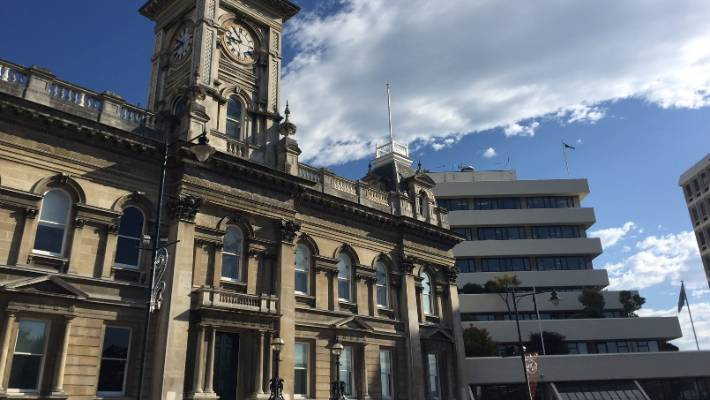

About Us
We are an organization mainly connected to the Otago City council.However, we do not have a lot to do aside from providing some basic information for the users all around the Otago region. We are always open to people contacting us to ask any question they want and we would love to help.If you needed to contact us you can visit the contact page and there will be details provided regarding how you can contact us. number: 02174398687
